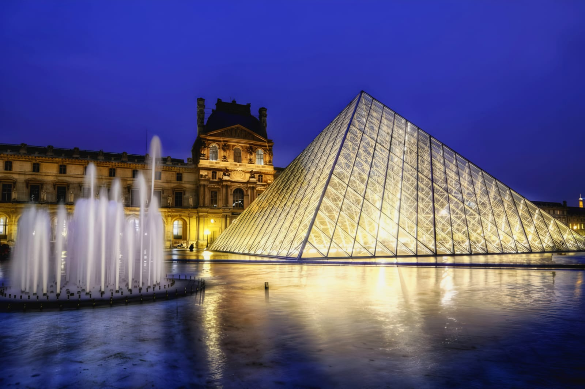
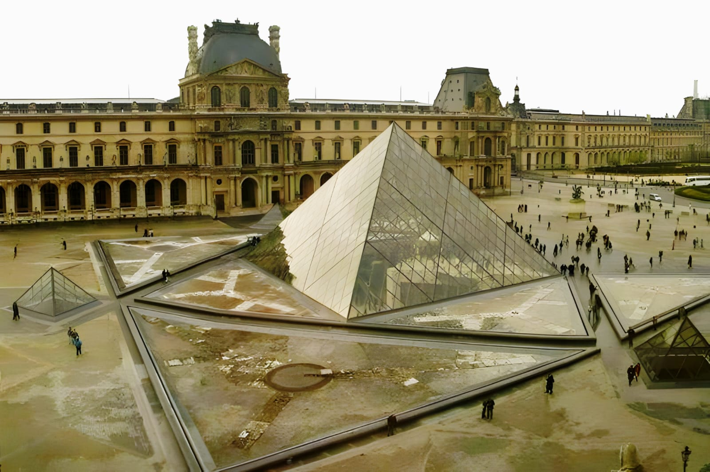
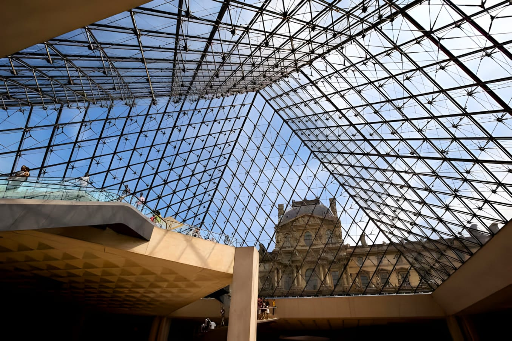
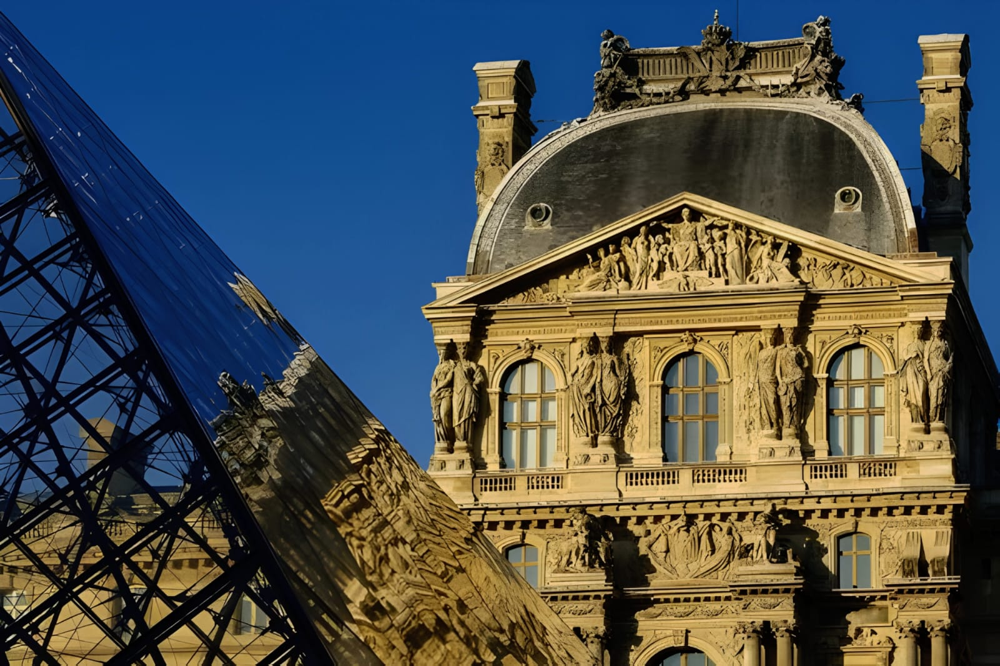
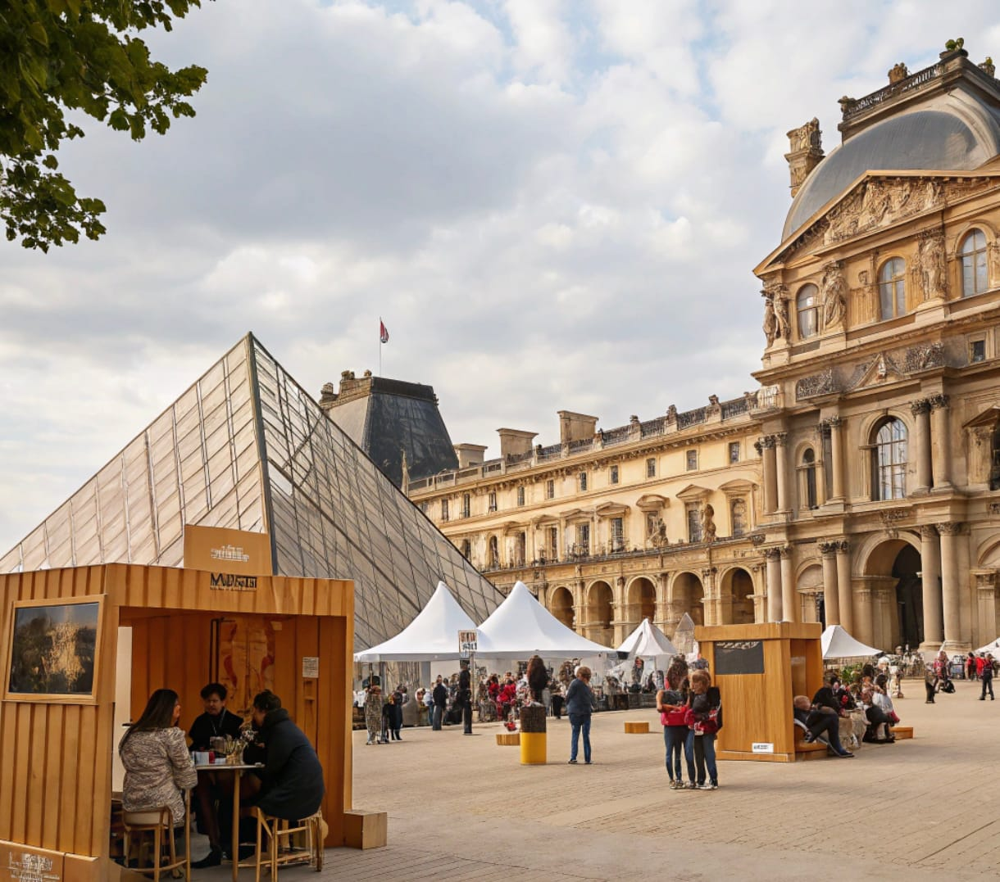
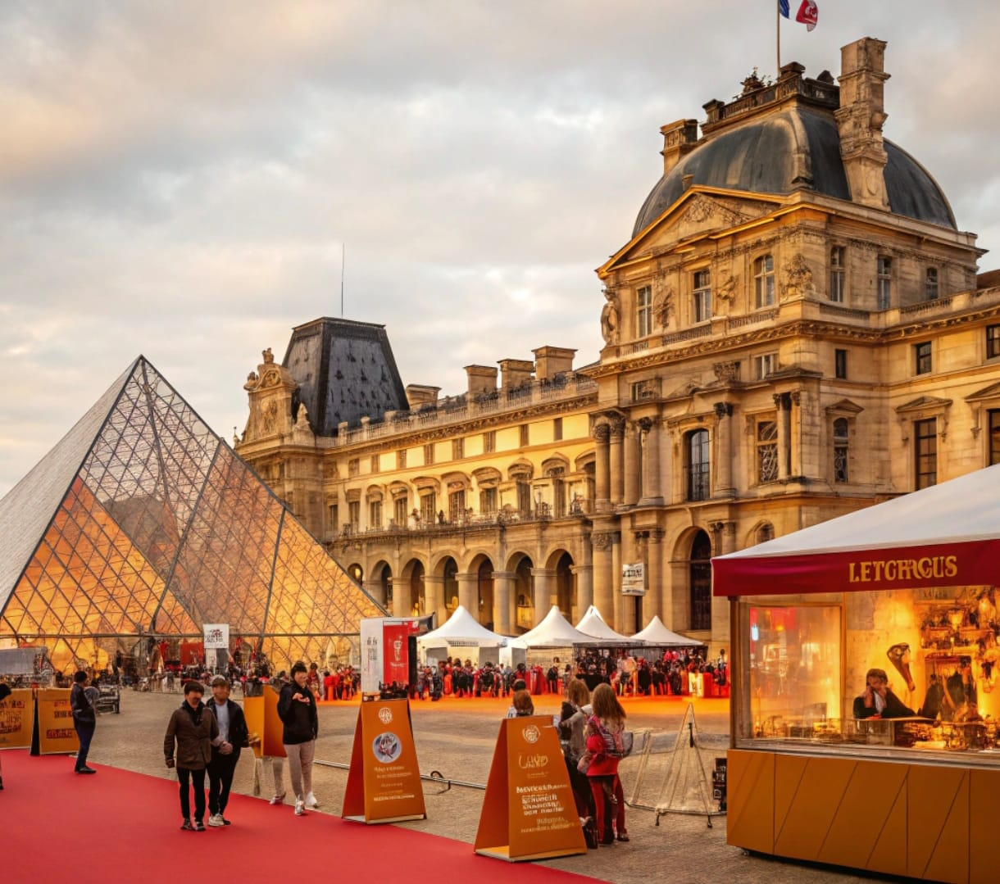
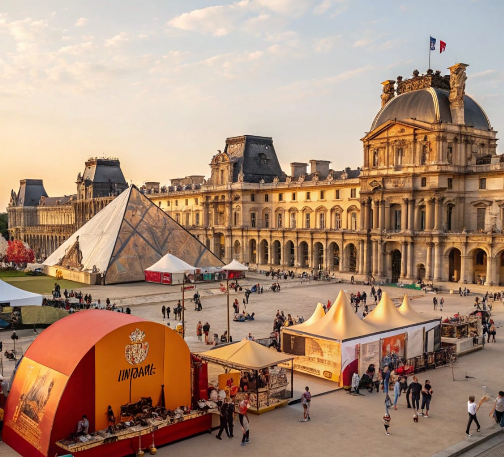

Museo Louvre
El Museo del Louvre, ubicado en París, Francia, es uno de los museos más reconocidos y visitados del mundo. Su historia y colección lo convierten en un referente cultural a nivel global.
Historia:
Originalmente construido como una fortaleza en el siglo XII por el rey Felipe II, el Louvre fue transformado en residencia real en el siglo XVI por Francisco I. Posteriormente, en 1793, durante la Revolución Francesa, se inauguró como museo público, exhibiendo 537 pinturas.
Colección:
El museo alberga aproximadamente 380,000 objetos y 35,000 obras de arte en ocho departamentos curatoriales, que abarcan desde antigüedades orientales hasta arte islámico. Entre sus piezas más destacadas se encuentran "La Gioconda" de Leonardo da Vinci, "La Venus de Milo" y "La Libertad guiando al pueblo" de Eugène Delacroix.

Arquitectura:
Una de las características más emblemáticas del Louvre es su pirámide de vidrio, diseñada por el arquitecto Ieoh Ming Pei e inaugurada en 1989. Esta estructura sirve como entrada principal y ha sido objeto de diversas interpretaciones y debates arquitectónicos.
Datos curiosos
• Si un visitante dedicara 30 segundos a cada obra expuesta, necesitaría aproximadamente 100 días para ver toda la colección.
• Durante la Segunda Guerra Mundial, muchas obras fueron evacuadas para protegerlas de posibles daños, incluyendo "La Gioconda".
• El Louvre fue escenario del popular libro y película "El Código Da Vinci", lo que incrementó aún más su fama mundial.
Explora el Museo del Louvre con nuestro recorrido virtual en 360°
Dirección: Rue de Rivoli, 75001 París, Francia
Festival Connaissance et histoire
Ubicación y Fecha:
El festival se llevará a cabo en el centro histórico de Paris Francia, en el museo Museo del Louvre del 15 al 20 de septiembre de 2025.
Objetivo:
Fomentar el interés por la historia y el patrimonio cultural a través de actividades educativas y recreativas que permitan a los participantes sumergirse en diferentes épocas y culturas.
Público Objetivo:
Abierto a todas las edades, el festival está diseñado para académicos, estudiantes, familias y cualquier persona con interés en la historia y la cultura.
